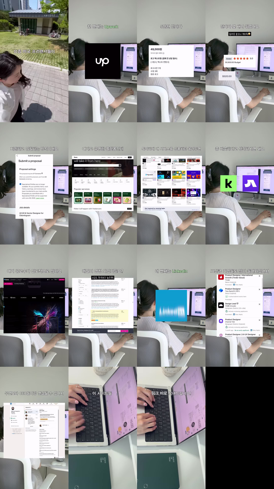

[출처: 화면 burn-in 자막 키프레임 판독(3초 간격). 음성 Whisper 미실행. 프레임 사이 문장 일부 누락 가능]
요즘 미국 프리랜서들이 (해외 플랫폼에서 일을 구하는 방식)
첫 번째는 Upwork
5만원 받다가 (국내 플랫폼 화면: 49,000원 로고 작업)
단가가 몇 배나 뛰었어요 — 달러로 받으니 개이득 (화면: $1,500.00 Budget, 별점 5.0, $520.00)
지원하고 입찰하는 방식이에요 (화면: Submit a proposal, "This proposal requires 27 Connects")
(두 번째) 여기도 유명한 플랫폼인데 (Fiverr)
특이하게 내 서비스를 상품처럼 올려두면
좀 비슷하다고 생각하시면 돼요 (화면: 초록 'k' 로고, 보라색 로고 — 국내 유사 플랫폼으로 추정)
(세 번째, Freelancer.com) 여기 공고수가 압도적으로 많아요
메일이 엄청 와있거든요? — 시급도 한국보다 높은편!
네 번째는 LinkedIn
그만큼 기업들도 많이 들어와있어서 (화면: Tinder Seoul, Toss Bank 프로덕트 디자이너 공고)
무엇보다 CEO들이랑 연결될 수 있어서
이 사이트들 링크 바로 보내드릴게요! [CTA — 요약에서 제거]
캡션 원문 · caption.txt (492B)
한국에서는 피할 수 없는 가격 경쟁…😭
저는 그게 싫어서 해외 시장으로 눈을 돌렸어요!
해외는 얼마나 싸게 하느냐가 아니라
클라이언트 문제를 얼마나 잘 이해했느냐로 뽑더라구요.
(영어 못해도 갠챠나요 ai로 소통 가능해요)
영상에 나온 사이트들 궁금하신 분들
댓글 남겨주시면 링크 정리본 보내드릴게요🤍🇺🇸
#프리랜서 #디자이너 =#크몽 #프리랜서디자이너
핵심 프레임 · img/keyframes.jpg (368775B)

② 분석·정리
Research Level 1
해외 프리랜서 플랫폼 4곳 소개 (Instagram 릴스)
계정: @pageone.designer (한장 (Page One) | 글로벌 • 디자인 수익화) · 게시 2026-08-13 · 약 44초 · 좋아요 3,448 / 댓글 3,097 (2026-10-23 수집)
URL: https://www.instagram.com/reel/Db97WToJsX3/
키워드: 해외 프리랜서, Upwork, Fiverr, Freelancer.com, LinkedIn, 디자이너 부업, 달러 수익, Connects
국내 디자인 외주는 가격 경쟁이 심하다. 그래서 해외 플랫폼 4곳(Upwork, Fiverr, Freelancer.com, LinkedIn)에서 달러로 일을 받으라는 프리랜서 디자이너의 경험담이다. 작성자에 따르면 해외에서는 가격보다 "클라이언트 문제를 얼마나 잘 이해했느냐"로 뽑는다. 영어는 AI로 보완할 수 있다고 한다.
2. 주요 내용
Upwork: 공고에 지원(입찰)하는 방식이다. 국내에서 약 5만 원(화면에는 49,000원 로고 작업)을 받던 작업 단가가 "몇 배" 올랐다고 한다(화면 예시: $1,500 예산 프로젝트, 별점 5.0, $520 수령).
Fiverr: 내 서비스를 상품(Gig)처럼 등록해 두는 방식이다. 국내 재능마켓과 비슷하다고 한다.
Freelancer.com: 공고 수가 "압도적으로 많고" 시급도 한국보다 높은 편이라고 한다.
LinkedIn: 기업 채용 공고가 많고(화면: Tinder Seoul, 토스뱅크의 Product Designer 공고), CEO와 직접 연결될 수 있다고 한다.
3. 수치/주장 확인
'5만 원 → 몇 배': 개인 사례이고 증빙은 화면 캡처뿐이다. 일반화할 수 없다.
Upwork 지원 비용: 화면의 "This proposal requires 27 Connects"는 공식 안내(제안서당 보통 4~16 Connects, 1 Connect = $0.15)보다 높다. 부스트가 포함됐거나 정책이 바뀐 결과일 수 있다(미확인).
수수료 언급이 없다: Upwork는 0~15%, Fiverr는 20%를 판매자 수익에서 뗀다. 영상의 "단가가 몇 배"는 수수료를 빼기 전 금액이다.
"Freelancer.com 공고 수 압도적", "시급 한국보다 높음": 근거 데이터가 제시되지 않았다(미확인).
4. 시사점
해외 플랫폼은 원화 대비 단가가 높을 수 있다. 다만 입찰 비용(Connects), 플랫폼 수수료, 환전·송금 비용, 시차, 분쟁 리스크를 함께 계산해야 한다. 마케팅 관점에서는 "국내 가격경쟁 → 해외 달러 수익" 프레임에 "댓글 달면 링크 정리본" CTA를 붙인 전형적인 리드 수집형 릴스다. 댓글 3,097개는 이 CTA의 효과로 보인다.
5. Research Level: 1
네 플랫폼의 이름과 기본 구조를 소개하는 입문 수준이다. 플랫폼은 모두 잘 알려져 있고, 수치는 개인 사례라 추가 연구 가치가 낮다. 다만 리드 수집 CTA 구조는 마케팅 참고 자료가 된다.
보강 정보 (추가 조사)
Upwork Connects는 개당 $0.15이고 최소 10개부터 구매할 수 있다. 무료 회원은 매월 10개, Freelancer Plus 회원은 매월 100개를 받는다(Plus 요금 $19.99). — https://www.upwork.com/resources/maximizing-your-upwork-connects , https://support.upwork.com/hc/en-us/articles/211062898-Understanding-and-using-Connects
2023-08-16부터 제안서 1건에 드는 Connects는 프로젝트 규모에 따라 4~16개다. 부스트하면 Connects가 추가로 든다. — https://community.upwork.com/t5/Product-Release-Notes/Marketplace-Updates-Changes-to-Upwork-Application-Prices/ba-p/1397770 , https://support.upwork.com/hc/en-us/articles/4406395531795-How-to-boost-your-proposal
영상 속 '27 Connects'가 나온 이유(부스트 여부, 정책 변경)는 미확인이다.
Upwork 프리랜서 수수료는 2025-05-01 신규 계약부터 고정 10%에서 변동 0~15%로 바뀌었다. — https://support.upwork.com/hc/en-us/articles/211062538-Learn-about-the-Freelancer-Service-Fee , https://upwork.pactsafe.io/versions/67ed7a58343b0bc9ae34112a.pdf
Fiverr 판매자는 주문액의 80%를 받는다(수수료 20%). 대금은 14일 정산 대기를 거친다. 구매자는 별도로 5.5% 수수료를 내고, $200 미만 주문에는 $3.50이 더 붙는다. — https://help.fiverr.com/hc/en-us/articles/34069565843985-How-Fiverr-works-for-freelancers , https://help.fiverr.com/hc/en-us/articles/360050216133-Paying-for-orders-extras-or-custom-offers
영상 속 초록 'k' 로고와 보라색 로고가 어떤 서비스인지(국내 유사 플랫폼으로 추정)는 미확인이다.
Freelancer.com 공고 수와 시급 비교 수치는 미확인이다(공식 통계를 찾지 못했다).